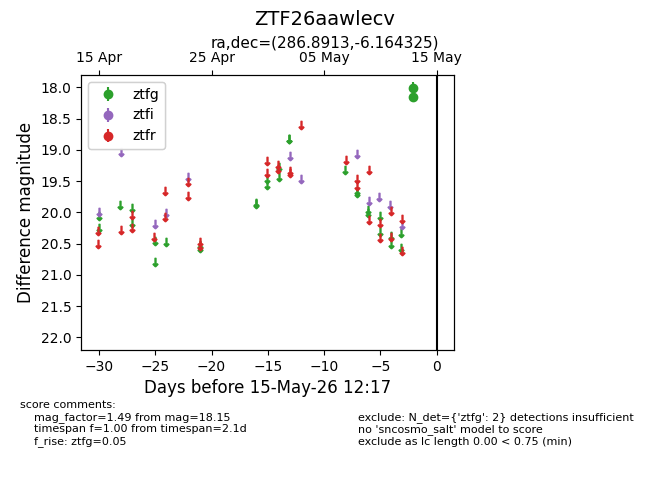
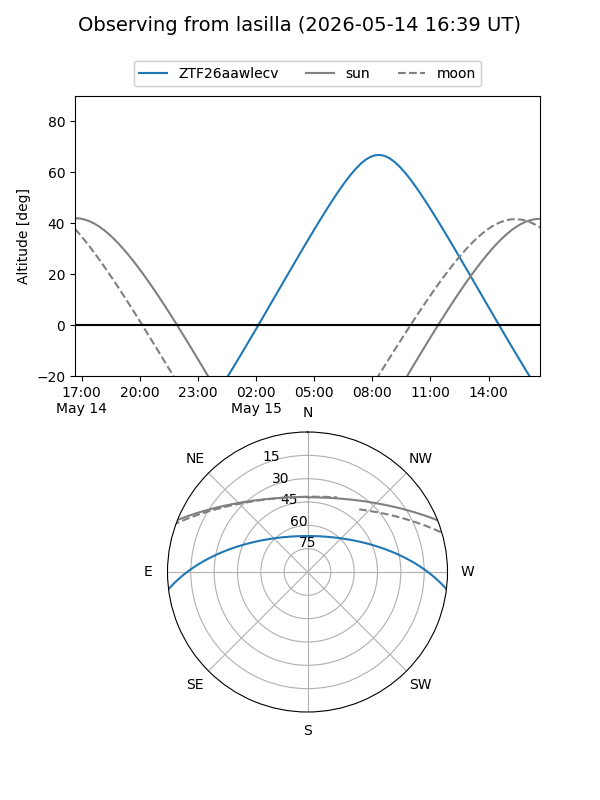
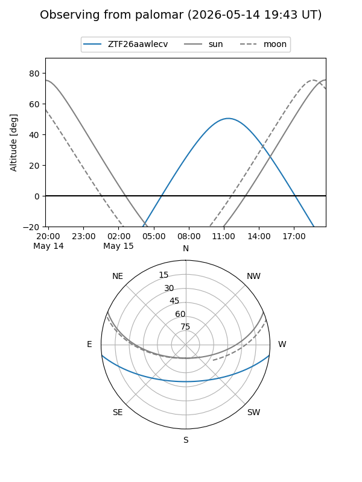

ZTF26aawlecv
Target ZTF26aawlecv at 2026-05-15 12:19
Aliases and brokers:
FINK: link
Lasair: link
ALeRCE: link
alt names
ZTF26aawlecv (ztf,fink_ztf)
Coordinates:
equatorial (ra, dec) = 286.8913,-6.16432
equatorial (HMS+DMS) = 19:07:33.92,-06:09:51.57
galactic (l, b) = (29.2574,-6.38322)
Flags:
Photometry:
last ztfg=18.15
2 ztfg detections
Lightcurve

Visibility


Additional plots